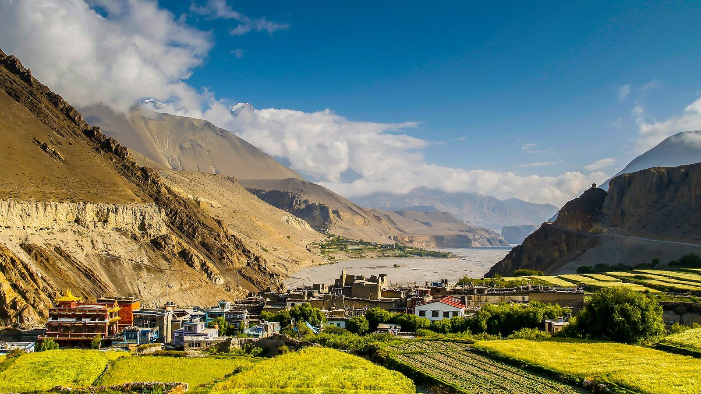

Jomsom & Muktinath
A week in Lower Mustang: fly to Jomsom, walk to Kagbeni and the shrine of Muktinath at 3,760 m, then follow the Kali Gandaki down through Marpha and Kalopani to Tatopani.


- Duration
- 5–10 days
- Distance
- 90 kmapproximate
- Highest point
- 3,760 mMuktinath · 12,336 ft
- Highest night
- 3,760 mMuktinath
- Difficulty
- EasyTeahouse lodges
- Best months
- Mar–May, Oct–Nov
Is this trek right for me?
The walking
7 days in all. Most walking days are 4 to 5 hours on foot, and the longest is about 7 hours. Short days below 3,500 m on good paths. Fine for a first trek.
The height
The highest night is at 3,760 m. You will notice the thinner air, but going slowly is usually enough.
Where you sleep
In lodges every night: a simple twin room, a shared bathroom and hot meals in a warm dining room.
The help you need
The rules require a licensed guide on this route. A porter to carry your bag is your choice.
What it costs
A guided trip with a trekking company usually costs USD 650 to 1,000 a person, going by the prices 9 companies published for 2026.
Overview
Lower Mustang is the dry, windy upper valley of the Kali Gandaki, behind the main Himalayan chain. A twenty-minute flight from Pokhara puts you down at Jomsom among bare brown hills, flat-roofed Thakali houses and apple orchards. From there the route climbs to the mud-walled village of Kagbeni and on to Muktinath, a temple sacred to both Hindus and Buddhists, then turns south and follows the river down between Dhaulagiri and the Annapurnas until pine forest and, finally, rice terraces return.
This was the second half of the old Annapurna Circuit and for decades one of Nepal's most popular lodge treks. A road now runs the whole way from Pokhara to Muktinath and carries pilgrims' jeeps, buses and motorbikes, so walking along it is dusty and far from peaceful. The answer is to stay off it. Trails on the opposite bank and over side ridges, by Lubra, Thini, Dhumba Lake and the east side of the river below Marpha, link the villages with little road walking. Many are marked with red and white paint, and a good guide knows which are open.
The walking is easy and mostly downhill, lodges in the Thakali villages are among the best in the country, and you never go above 3,800 m. Two things need planning. Muktinath is high enough to cause altitude sickness if you fly in and walk straight up, and the valley wind blows hard from late morning every day, so the walking is best done early.
Highlights
- Muktinath temple, with its 108 water spouts and natural gas flame
- The mud-walled lanes and red monastery of Kagbeni
- Marpha's whitewashed alleys, apple orchards and brandy
- Dhaulagiri and the Nilgiris from Larjung and Kalopani
- The Bon village of Lubra on the back trail to Jomsom
- Hot springs beside the river at Tatopani
Easy: Easy, mostly downhill walking on good paths, with one 950 m climb to Muktinath that can bring on altitude symptoms.
Altitude profile
Height at the end of each day, with the high points in between. Dots are the places you sleep.
2 nights gain height faster than the usual guideline. That is common on standard itineraries, but it is where problems start. Check how you feel before each of these climbs.
- Day 1, Kagbeni: A jump from 822 m to sleep at 2810 m in a single day.
- Day 2, Muktinath: Sleeping altitude rises 760 m, well over the 500 m guideline even with a rest night next to it.
Try adding a night in the acclimatization checker · Check your symptoms
Day by day
About 26–32 h of walking in total. Times are for a steady pace with short breaks; add more for photos and tea.
-
Day1
Fly to Jomsom, walk to Kagbeni
Jomsom to Eklebhatti to Kagbeni
After the short morning flight, register at the checkpoint in Jomsom and set off up the wide gravel bed of the Kali Gandaki before the wind rises. The way is flat, partly on the road and partly on the riverbed, to Eklebhatti and on to Kagbeni. Spend the afternoon in the old village and its monastery.
26 places to stay in Kagbeni, such as Snow Lion, Red House and Hotel View Point. See them
Watch this gainA jump from 822 m to sleep at 2810 m in a single day.
- Sleep at
- 2,810 m
- Change
- +90 m
- Walking
- 3–4 h
- Distance
- 10 km
-
Day2
Kagbeni to Muktinath
Kagbeni to Jharkot to Muktinath
A steady climb of 950 m up a bare hillside, crossing the road several times, to Khinga and the fortified village of Jharkot. Ranipauwa, where the lodges are, is another hour, with the temple twenty minutes above it. This is a big jump in sleeping height after flying in, so go slowly and drink plenty.
17 places to stay in Muktinath, such as Town house, Hotel Moonlight and The Paths of Dream. See them
Watch this gainSleeping altitude rises 760 m, well over the 500 m guideline even with a rest night next to it.
- Sleep at
- 3,760 m
- Change
- +950 m
- Walking
- 4–5 h
- Distance
- 10 km
-
Day3
Muktinath to Jomsom by Lubra
Visit the temple at dawn, then leave the road for the trail over the ridge to the south, with Dhaulagiri ahead. It drops steeply to the Panda Khola and the Bon village of Lubra, a good lunch stop, then follows the gravel riverbed out to the Kali Gandaki and the road into Jomsom. Expect a headwind for the last hour.
44 places to stay in Jomsom, such as Shaligram, Jomsom Alpen Rose and Hotel Jomsom View. See them
- Sleep at
- 2,720 m
- Change
- −1,040 m
- Walking
- 5–6 h
-
Day4
Jomsom to Marpha by Thini and Dhumba Lake
Jomsom to Thini to Dhumba Lake to Marpha
A short day on the quiet east bank. Cross the river to Thini, walk on to Dhumba Lake and the monastery on the ridge above it, then descend and follow the east-bank trail to the Tibetan settlement at Chhairo, where a bridge crosses to Marpha. Spend the afternoon among its lanes, monastery and orchards.
12 places to stay in Marpha, such as Neeru Guest House, Marpha Palace and Paradise Guest House. See them
- Sleep at
- 2,670 m
- Change
- −50 m
- High point
- 2,850 m
- Walking
- 3–4 h
-
Day5
Marpha to Kalopani
Marpha to Tukuche to Larjung to Kalopani
Start early to beat the wind. Use the east-bank trail where you can and cross back for Tukuche and its old merchant houses. Beyond Larjung the valley floor is a very wide spread of gravel under the east face of Dhaulagiri, and the path then enters pine forest and climbs gently to Kalopani.
8 places to stay in Kalopani, such as Kalopani Guesthouse, Angel Guest House and Pine Forest Lodge. See them
- Sleep at
- 2,530 m
- Change
- −140 m
- Walking
- 5–6 h
- Distance
- 20 km
-
Day6
Kalopani to Tatopani
Kalopani to Ghasa to Dana to Tatopani
A descent of more than 1,300 m as the valley closes into a gorge between Dhaulagiri and the Annapurnas. Below Lete, footpaths on the east bank avoid much of the road to Ghasa, where permits are checked. Then come the Rupse waterfall, the orange trees of Dana and the hot springs. Split the day at Ghasa if it is hot.
18 places to stay in Tatopani, such as Dhaulagiri Lodge and Restaurant, Hotel Hotspring Inn and Hotel Himalaya. See them
- Sleep at
- 1,190 m
- Change
- −1,340 m
- Walking
- 6–7 h
- Distance
- 22 km
-
Day7
Tatopani to Pokhara
Soak once more in the riverside pools, then take a bus or jeep down the Kali Gandaki to Beni and along the highway through Kusma and Nayapul to Pokhara. Buses leave in the morning. In the monsoon the road below Tatopani is prone to landslides.
Travel day- Sleep at
- 822 m
- Change
- −368 m
- Bus
- 5–6 h
Ways to change it
Fly out from Jomsom
Finish after day three and fly back to Pokhara the next morning. This makes a four- or five-day trip that takes in Kagbeni, Muktinath and Lubra.
Sleep at Jharkot
Stopping at Jharkot instead of Ranipauwa keeps the height gain from Kagbeni to about 740 m. Visit the temple late that afternoon or early the next morning.
On to Ghorepani and Poon Hill
From Tatopani climb 1,700 m in a day to Ghorepani, watch sunrise from Poon Hill and walk out to Nayapul. Add two to three days.
Dhaulagiri Icefall from Larjung
A full-day side trip climbs from Larjung to yak pastures high above the valley, below the icefall on Dhaulagiri's east face. Take a local guide and stay the night in Larjung or Kobang.
One way by road
With little time, take a jeep in one direction between Pokhara and Jomsom and walk only the upper valley. The drive takes eight to ten hours.
Route map
The map loads when you scroll here. It needs a connection the first time; tiles you have viewed stay available offline.
The solid line follows footpaths mapped in OpenStreetMap. It is a guide to where the route goes, not a navigation track: trails are rerouted after landslides, so follow the signs and people on the ground. Marker positions come from OpenStreetMap where we could match a place, and from our own estimates elsewhere.
Download the trail for a map app A GPX file with 94 km of mapped path and every stop. It opens in free apps such as Organic Maps.
When to go
- January: difficult
- February: good
- March: best time
- April: best time
- May: best time
- June: good
- July: difficult
- August: difficult
- September: good
- October: best time
- November: best time
- December: good
March to May and October to November are best, with apple blossom in April and the harvest in September and October. Above Kalopani the valley lies in the rain shadow and stays fairly dry in the monsoon, but flights are unreliable then and the road and trail below Ghasa suffer landslides. Winter is cold and windy, with occasional snow at Muktinath.
Permits and guide rules
Guide required. Since April 2023 the Nepal Tourism Board has required foreign trekkers in conservation areas to walk with a licensed guide, though checks on the trail are inconsistent. The way is never hard to find here. What a guide adds is knowledge of the footpaths that avoid the road, which change as bridges wash out and new tracks are cut, and an eye on altitude symptoms at Muktinath.
ACAP
Conservation areaAnnapurna Conservation Area Permit · National Trust for Nature Conservation
| Foreign nationals | NPR 3,000 | person, single entry |
| SAARC nationals | NPR 1,000 | person, single entry |
Where: Online at NTNC's e-permit site, or in person at the Tourist Service Centre in Bhrikutimandap, Kathmandu, and the Nepal Tourism Board office in Pokhara. A permit issued at a trail checkpost costs double.
The fee includes tax and children under 10 do not need a permit. Paying online by card adds a 2.9% gateway charge. Covers every trek in the Annapurna range and Lower Mustang; Upper Mustang and Nar Phu need a restricted-area permit as well.
TIMS card
RegistrationTrekkers' Information Management System card · Nepal Tourism Board and the Trekking Agencies' Association of Nepal
| Foreign nationals | NPR 2,000 | person, per trek |
| SAARC nationals | NPR 1,000 | person, per trek |
Where: Only through a registered trekking agency, which applies in the Nepal Tourism Board's online system with your route and your guide's details. Individual trekkers can no longer buy one over the counter.
Since the revised rules of 31 March 2023 the card is tied to trekking with a licensed guide on the tourism board's listed routes. It is not used in Khumbu, where the municipality's Trek Card took its place in 2017. For restricted areas the published rules pull both ways: TAAN's pages say TIMS applies in every trekking area, restricted ones included, yet also list visitors holding Department of Immigration permits among those who do not need one, and agencies disagree. Your agency, which is compulsory there anyway, will know what the checkposts on your route ask for. Reports from 2025–26 describe patchy checks of the card, especially in Annapurna.
Agency required
Fees and rules change, sometimes mid-season. Treat these as a planning guide and confirm with the Nepal Tourism Board, the Department of Immigration or a registered agency before you travel. Last reviewed 2026-11. All permits and fees
Getting there
Fly from Pokhara to Jomsom in twenty minutes, on early-morning flights that are cancelled when wind or cloud builds, or take a bus or jeep up the Kali Gandaki road in eight to ten hours. The trek ends at Tatopani, five to six hours by bus from Pokhara through Beni.
-
Flight: Pokhara to Jomsom · 20 min
Flights leave in the first hours after dawn. Book ahead in October and November and keep a spare day.
-
Bus: Pokhara to Jomsom · 8–10 hr
Buses and shared jeeps run daily through Beni and Tatopani. The road is rough above Beni and slow after rain.
-
Jeep: Jomsom to Muktinath · 1.5 hr
Shared jeeps for pilgrims run all day. Useful for a day visit to the temple, but do not ride up to sleep there on the day you fly in.
-
Bus: Tatopani to Pokhara · 5–6 hr
Direct buses in the morning, or change at Beni.
Hazards on this route
Altitude at Muktinath
Flying from Pokhara at about 800 m and sleeping at 3,760 m two nights later is faster than recommended, and headaches at Ranipauwa are common. If you feel unwell, sleep at Jharkot, 200 m lower, or go back down to Kagbeni.
Wind and dust
From about eleven each morning a strong wind blows up the valley between Kalopani and Kagbeni, lifting sand and dust. Walk early, and carry sunglasses and something to cover your nose and mouth.
Traffic on the road
Jeeps, buses and motorbikes use the road all day in the pilgrimage seasons. Take the footpaths on the far bank where they exist, and stand well clear when vehicles pass on narrow sections.
River crossings and landslides
Seasonal footbridges on the side trails are removed or washed away in the monsoon, and the gorge road below Ghasa is often blocked by slides between June and September. Ask each morning which bank is passable.
Flight cancellations
Jomsom flights stop when cloud covers the approach or the wind rises, sometimes for days at a time. Keep a spare day in hand, or be ready to go by road.
Practical tips
- Walk between six and eleven and keep the afternoons for the villages. The wind makes afternoon walking unpleasant.
- Kagbeni is as far north as the Annapurna permit takes you. Beyond the checkpoint you need the Upper Mustang restricted-area permit.
- Eat the Thakali dal bhat in Marpha and Tukuche, and try the local apple juice, cider and brandy.
- At Muktinath take off your shoes at the temple, ask before photographing pilgrims and walk clockwise round the shrines.
- Jomsom has cash machines, but they often fail with foreign cards. Carry cash from Pokhara.
- On the flight to Jomsom the Annapurnas are on the right and Dhaulagiri is on the left.
Cash machines on the route: Jomsom, Beni. They run out of cash and go offline, so carry what you need from Pokhara. Work out how much.
Plan this trek
Choose your dates and see the whole trip on one page: where you sleep each night, who can help you, what it may cost and the papers you need. Then ask for a price.
More tools for this trek
Who can help you on this trek
The rules require a licensed guide on this route. A porter to carry your bag is your choice.
-
A trekking company that arranges everythingUsually USD 650 to 1,000 a person for everything on the trek.
-
A guide, and a porter to carry your bagAbout USD 25 to 40 a day for the guide and USD 18 to 25 for the porter.
-
A guideAbout USD 25 to 40 a day.
-
A porter to carry your bagThe rules require a licensed guide on this route.
-
On your ownThe rules require a licensed guide on this route.
Do you work on the Jomsom & Muktinath route as a guide, porter or company? Join TrekkSewa.
Quick answers
How long does the Jomsom & Muktinath trek take?
Most people take 5–10 days. The itinerary on this page is 7 days.
How high does the Jomsom & Muktinath trek go?
The highest point is Muktinath at 3,760 m (12,336 ft). The highest place you sleep is Muktinath at 3,760 m.
How difficult is it?
We grade it easy. Easy, mostly downhill walking on good paths, with one 950 m climb to Muktinath that can bring on altitude symptoms.
Which permits do I need?
ACAP, TIMS card. Fees and where to get each one are listed in the permits section above.
Do I need a guide?
Since April 2023 the Nepal Tourism Board has required foreign trekkers in conservation areas to walk with a licensed guide, though checks on the trail are inconsistent. The way is never hard to find here. What a guide adds is knowledge of the footpaths that avoid the road, which change as bridges wash out and new tracks are cut, and an eye on altitude symptoms at Muktinath.
When is the best time to go?
Mar–May, Oct–Nov are best. March to May and October to November are best, with apple blossom in April and the harvest in September and October. Above Kalopani the valley lies in the rain shadow and stays fairly dry in the monsoon, but flights are unreliable then and the road and trail below Ghasa suffer landslides. Winter is cold and windy, with occasional snow at Muktinath.
The stages on this route are well established. Reviewed 2026-11. Trails, lodges and rules change; confirm locally before you rely on any detail. Report a correction.
Similar treks
More in Mustang Annapurna
Annapurna
Annapurna Circuit
Around the Annapurna range and over the 5,416 m Thorong La
 Mustang
Mustang
Upper Mustang
Twelve days across the high desert to the walled town of Lo Manthang
 Annapurna
Annapurna
Ghorepani Poon Hill
A short loop through rhododendron forest to a famous sunrise ridge
 Annapurna
Annapurna
Tilicho Lake
A glacial lake at 4,919 m, then on over the Thorong La